A Visual Expression of Emotion through Fluorescent Light
Photography
Nicole Farrugia
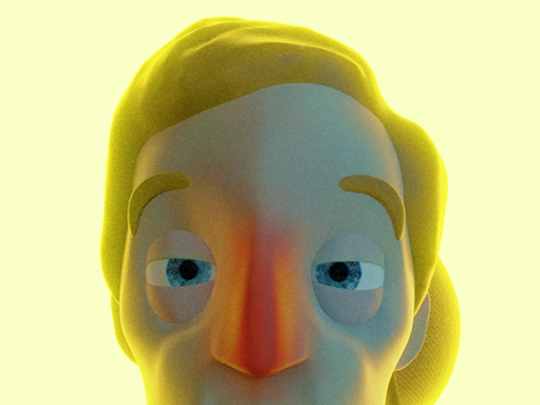
An Adaptation of a Maltese Poem into an Animated Short Film
3D Animation
Aaron Zarb
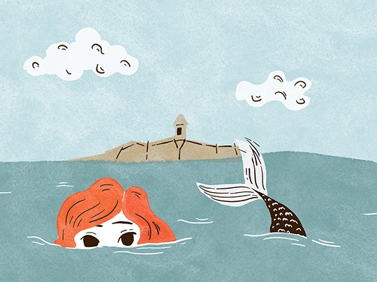
An Adapation of a Maltese Folktale
Sequential Art
Rebecca Zammit
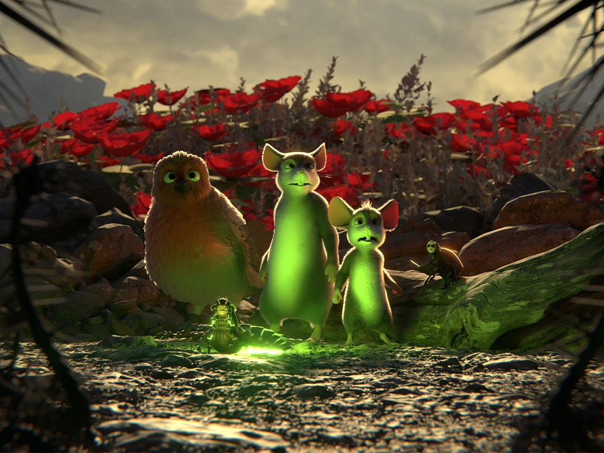
Colour in Disney’s Animated Adaptations
3D Animation
Samwel Borg
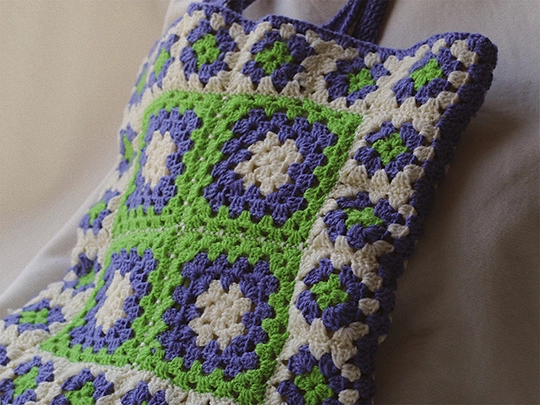
Exploring the Outcomes of Creativity through Mental Health
Textile Crafts
Maria Spiteri
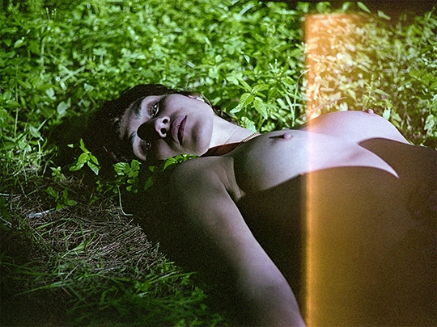
Exploring the Space between Clothing and the Female Body
Film Photography
Sasha Vella
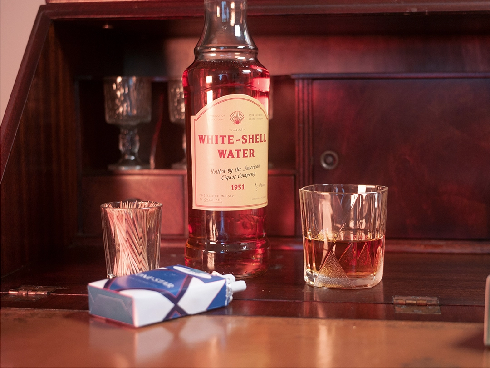
Fake Authenticity in Filmmaking
Graphic Design
Paige Farrugia
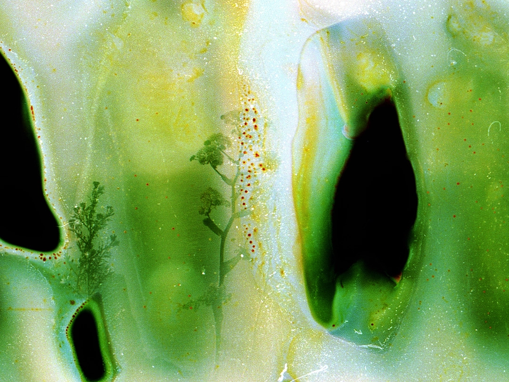
Fragments
Photography
Sarah Bonaci
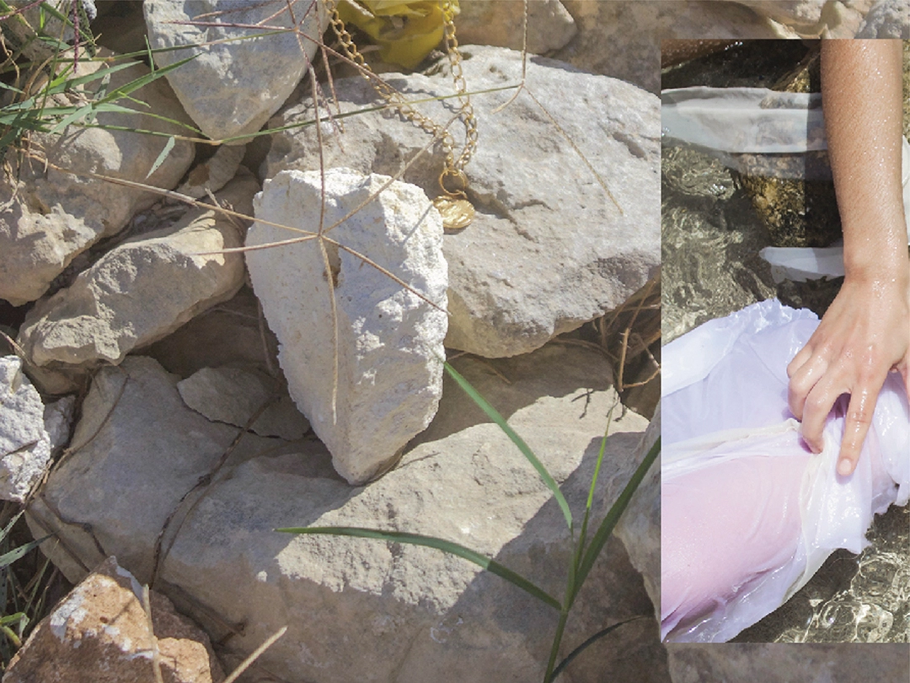
In Reenactment
Photography
Martina Farrugia
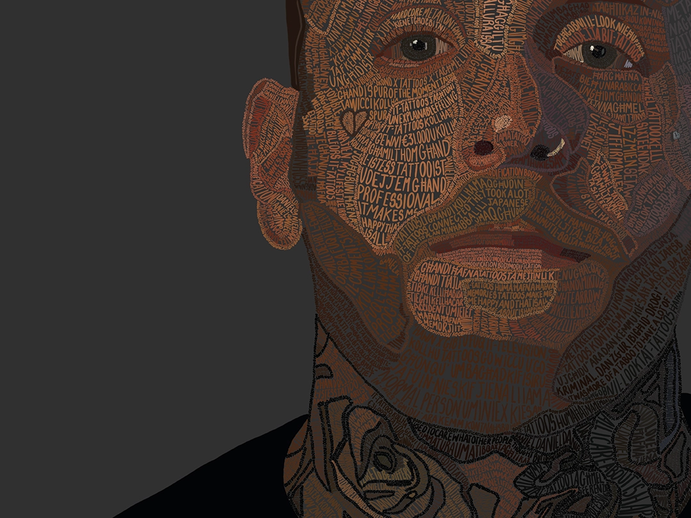
Leaving a Mark
Typography
Ruth Calleja
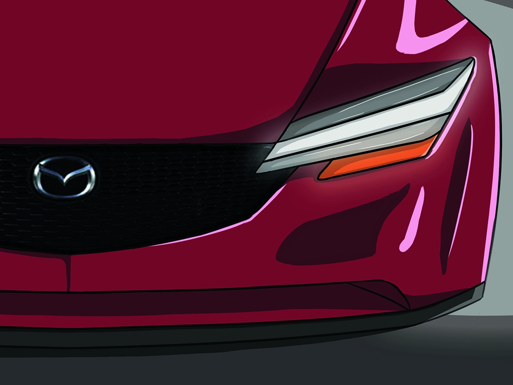
Mazda's Evolution of Design
Automotive Design
Kristov Scicluna
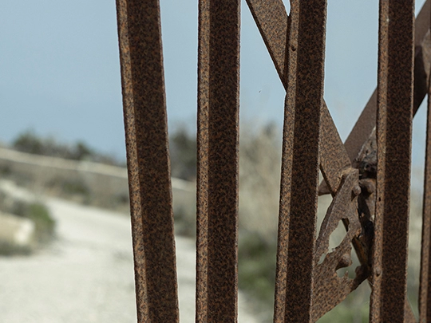
Moving Places
Photography
Cherise Micallef
Religious Iconography in Contemporary Art
Photography
Shania Camenzuli
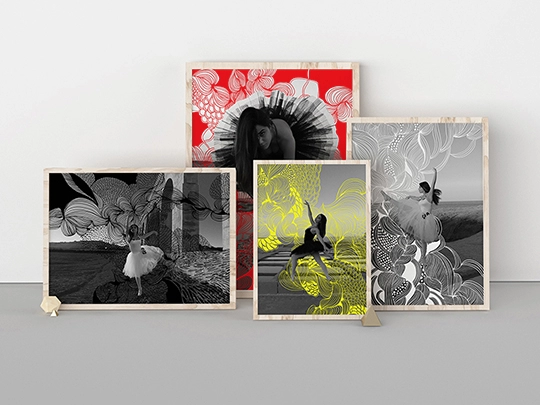
Repetition as a Record of Movement through Lenticular Art
Typography
Stephanie Calleja
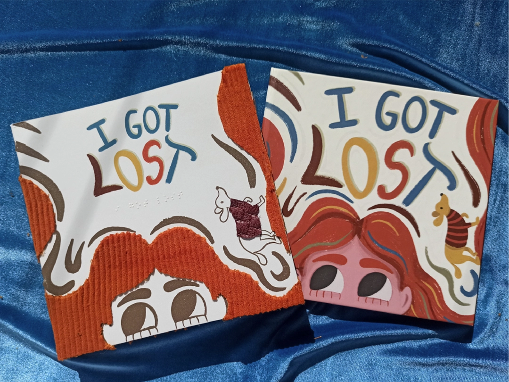
A Visual Experience for the Visually Impaired
Illustration
Elisa Chetcuti
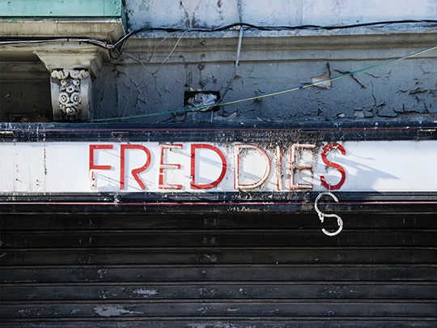
The Type that Surrounds Us
Typography
Naomi Portelli